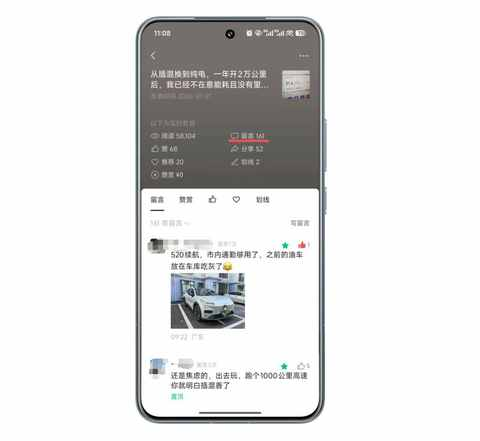
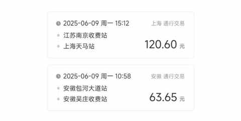
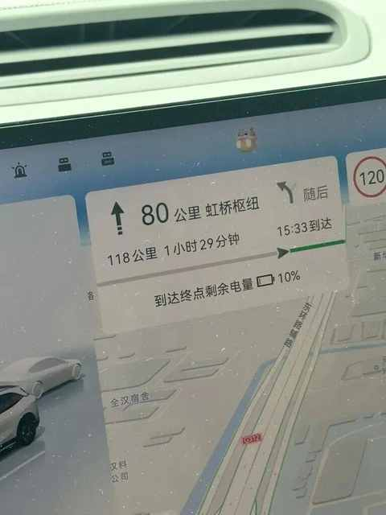
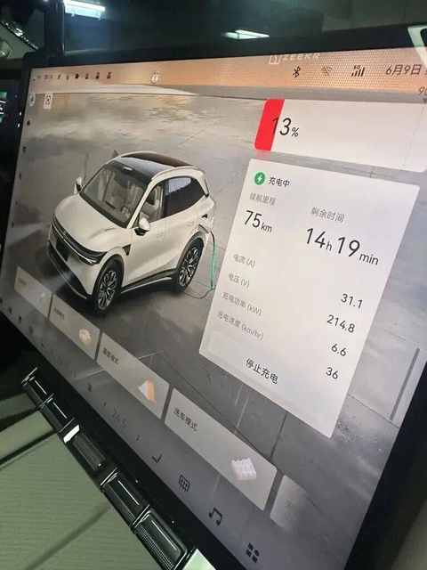
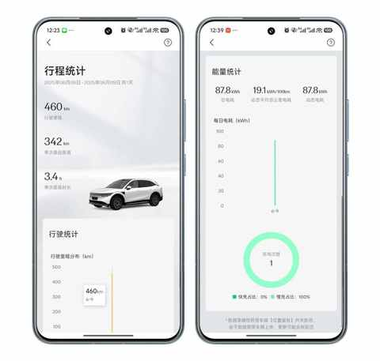
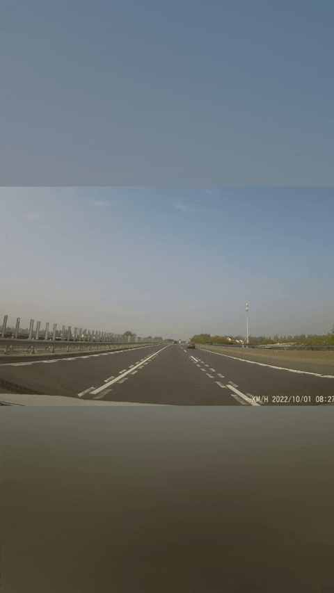
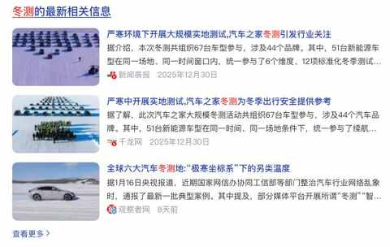
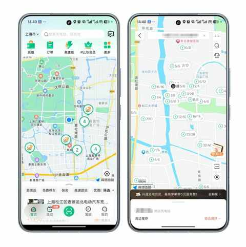
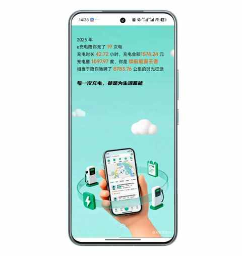

想通了！开电车真没必要里程焦虑：一年两万公里，实测续航够用，充电也越来越方便

恰恰相反，从插混换到纯电的原因，并不是插混让我里程焦虑，而是基于下面三个因素的综合考虑：
① 鲜有里程焦虑
插混使用 7 年多，只遇到一次里程焦虑的情况，而且是多种情况的叠加之后造成的。
- 1）高速长时间拥堵
- 2）连续多个服务区关闭
- 3）当时的车馈时油耗高
我的逻辑是：
既然插混 7 年才遇到 1 次里程焦虑的情况，那如果换成电车 7 年时间有 2-3 次里程焦虑的情况也完全能接受。
毕竟节假日出行，高速免费，难免会遇到堵车和服务区车很多的情况。
换成纯电SUV这一年多来，里程焦虑的情况还没遇到过，一般是跑到 30% 左右会想着去下一个服务区充电，只有 2次遇到充电排队的情况，大多数时候到服务区之后，根据指引找到充电站，吃顿饭的功夫就充好了，大部分时候是从 20% 充到 90%，而不是充满再走。
② 有家充条件
充电对于我而言不是难题，能做到随用随充，临时要开长途会直接去快充站补电。
用插混的时候，有相当长一段时间是需要去住的位置好几公里的地方充电的，每次来回都挺折腾的。
虽然才十几度的电池，但慢充要四五个小时，每次基本是上午去充电，下午才能去取车。
③ 长途需求少
至少80%的用车场景都在城区，需要跑单程 500km 以上的长途次数，两只手能数得过来。
如果长途多，充电频次和耗时是必须优先考虑的，因为这两个用车的小细节很影响用车体验，再遇到充电排队导致时间过长，那就耽误正事了。
实话说，在换电车的前几个月，我也是有里程焦虑的，每天开车的时候会不由自主的看电量，如果那个时候问我是否有里程焦虑，我估计会回复：没有焦虑但会关注电量和能耗表现。
不过在当下，已经从插混换成纯电超过一年了，不多不少开了 2w 多公里，现在倒是可以斩钉截铁的说：开电车真没有必要里程焦虑！
焦虑的来源，很大程度上来自于电池的物理特性，导致在不同用车场景下，车辆续航的不确定性，从而带来的掌控感的缺失。
毕竟，谁都不想出现开着开着车，突然电量告急，然后附近又没有充电桩的情况，由此我便有了下面几个思考点：
1️⃣ 极端情况概率低
如果从这个角度出发去思考，想象中突然电量告急的极端情况会很容易出现吗？
经常开车的司机都知道，当油量告急或电量告急的前，在开的过程中会有强提醒，提醒的目的便是让你抓紧去补能，从而规避极端情况的出现。
恰好在暑期的时候，遇到一次类似情况。
当天是6 月 9 号，星期天，一家三口从合肥返程上海，全程 460km，高速里程大概 440km。

由于是周日下午，高速上车流量不小，不巧的是连续路过的两个服务区车都不少，都需要排队充电。

再看了一眼续航和距离之后，果断决定不排队直接开回家再充电，因为余量充足能到目的地。

最终顺利抵达，在小区车位停好车，开始充电的时候电量显示为 13%，续航里程 75km。

能耗情况，如果上图所示，夏季一家三口的高速出行，大约是每百公里 19.1kWh。
2️⃣ 车辆的边界和特性
不得不提的是，不同类型的车，有着不同的边界和特性。
简单讲 3 个常识：
① 关于底盘高度
由于底盘高度的差别，不同车辆的通过性稍有差别，在城区道路可能感觉不到，但如果开到一个坑洼路段，有些车能无碍的通过，有些车可能会磕到底盘。
如果对是否能通过某段路，没有一个准确的判断，那么极有可能会遇到不得不叫拖车的情况。
新能源车相对油车有一个很大的不同是，新能源车的电池往往是放在底盘的，如果不慎磕到电池包，那对于车辆的行驶安全来说是一件很大的事情。
② 关于轮胎
车厂给不同的车辆配置的轮胎往往都是各异的，有些轮胎甚至是和轮胎供应商定制的系列，这是其一，轮胎需要适配车辆，保障车辆的加速和刹车性能。
其二，是轮胎都有一个厂家的建议使用年限与里程，到了某一个使用年限和里程便到了轮胎必须更换的时候。
这一点，我深有感触，因为在2022 年的国庆节当天，在高速上以120km的时速行驶的时候，左后轮突然爆胎，幸运的是当时车少及时把车控制住了，顺利停到应急车道等到高速救援拖车。

最终排查下来的原因是：轮胎虽然磨损的不多，但已经到了使用年限，在高速行驶的时候到了极限值，从而导致的突然爆胎。
③ 关于能耗与续航
能耗与续航和速度、乘车人数、温度等息息相关，如果抛开这几个因素，去聊能耗与续航，无异于缘木求鱼。
在北方的冬季使用电车，由于电池的物理特性和温度很低的 buff，必然会带来能耗的增加和续航的大幅下降。
很明显，在北方地区的冬季，就城区而言，增程、插混、纯电车型的使用差别不大，但增程和插混无疑能有更带来更稳妥的长途体验。
我想也是基于这一因素，各大车厂都很重视冬测，去祖国最冷的地方测试车辆的能耗与续航情况，如果在极端情况下表现尚可，那么在日常使用中的整体体验才更有保障。

3️⃣ 聚焦需求和场景
我们想买或更换某一件物品，底层逻辑是有了需求和使用场景，然后我们找到了对应的物品。
买车是同样的道理，先聚焦自身或家庭的需求和用车场景，然后找到相关车辆，最终做出选择。
如果你不想再补能上耗费过多精力，那油车、增程、插混都是不错的选择；
如果你日常接送娃上下学为主，那纯电可能用起来更省心；
如果你希望车辆更有科技感，那各个国产品牌的新能源车都值得入手；
……
4️⃣ 充电越来越方便
不难发现，现在充电站越建越多，充电也越来越方便。

随着充电站的增多，快充桩也同步在增加，高速出行场景下，吃顿饭的功夫把电充好已成为常态。

在过去的 2025 年，除了家充桩之外，国家电网的充电桩是去外地出行的时候使用最多的，有一个大的感受是：120kWh及以上的快充桩越来越多， 60kWh 及以下的慢充桩越来越少。
因此，是否焦虑，其关键在于是否“想通”。
下次当你为续航纠结时，不妨也问问自己：我的用车场景究竟如何？极端情况真的很容易出现吗？答案，很可能就藏在您对日常生活的诚实思考里。
相信随着停车场里充电桩的增加，电池技术的不断突破，在不远的未来，“里程焦虑”终将成为一个历史名词。